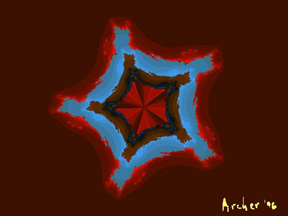

In my opinion, one of my very strong images. Alas, the original formula has been lost, and despite many efforts I have been unable to recapitulate it. The image exists at moderate resolution, sufficient for web display (as seen here) but I am forever precluded from making a large output print of it.

Return to
Don Archer Digital Art